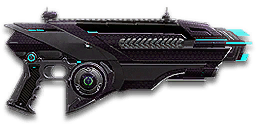

← Back to the Solstice VE3 comparison
Sage Guide · Vanu Sovereignty · Light Assault / Engineer
The gun every VS Light Assault and Engineer starts with. No certs spent, no unlocks needed — this page teaches you to win fights with it today.
The one-line verdict: the balanced starter — no punishing weakness, no single superpower. It has the joint-tightest aimed cone on the move of any starter carbine (tied with the CB-100), the joint-lowest vertical recoil (also tied with the CB-100), the fastest reload, and the fastest bullets. It never wins the damage race on paper, so it wins fights on handling instead. Fight between 10 and 40 metres and it will carry you.

The Solstice VE3 · Vanu Sovereignty · 30-round magazine
Picture the scene, because you've probably lived it: you're sprinting across a courtyard, an enemy appears, and you do everything at once — hold the trigger down while you're still running, then press aim-down-sights (ADS) a split-second later, finger still down. The sight picture snaps in, it looks precise… and your bullets spray everywhere except the man in your crosshair. He kills you. It feels like the game cheated. It didn't — here's what actually happened.
You started firing from a sprint, from the hip. Sprinting is the least accurate state in the game: your cone of fire starts at 7.0° — fully bloomed, the widest it can ever be. Every shot you fire from the hip widens it further still (+0.08° per shot).
Then you pressed ADS mid-hold — and nothing reset. Aiming down sights does not shrink a cone of fire that is already bloomed. The scope only gives you a precise picture; the bullets keep flying out of the wide cone you built while running and hipfiring. That's the whole mystery: accurate-looking aim, wildly inaccurate gun.
Two timers stack the deck further: your gun needs about 0.3 s to settle after a sprint, and raising the sight itself takes ~0.15 s. Trigger held through all of it means your first half-second of fire is pure confetti — and at 698 RPM, that's about six wasted rounds before you've even started aiming.
1 · Feet. Let go of sprint (and the trigger, if you're already holding it). Stop, or drop into a strafe — anything but a full sprint.
2 · Sight. Press ADS and let the sight come up. This takes a heartbeat — that's fine, step back behind cover for it if the corner is hot.
3 · Trigger. Now fire. Starting from the aimed cone of 0.1°, your first shots land where the dot points, and you control the bloom from zero instead of inheriting a maxed-out cone.
Stop → aim → fire. If you take one habit from this entire page, take this one. You'll practise exactly this rhythm in the simulator in section 04.
Four beats, left to right — the same mistake the cards above describe, drawn out.
1 · SprintingYour cone starts maxed at 7.0° — the widest it can ever be.
2 · Trigger heldFiring from the hip while running — every shot adds bloom.
3 · ADS, mid-holdThe sight looks precise — but aiming down sights does not reset bloom.
4 · The sprayBullets fly out of the wide cone you built. The enemy walks away.
Same fight, done right. Each beat has a job, and the order is the whole lesson.
1 · StopLet go of sprint (and the trigger). About 0.3 s for the gun to settle.
2 · AimPress ADS and let the sight come up (~0.15 s).
3 · FireNow fire — from the aimed cone. First shots land where the dot points.
The exception — under ~8 m, skip the whole danceHipfire works, no ADS needed, and stopping is optional. Keep moving, strafe, and let the hipfire ring do the work.
Every enemy infantry has 1,000 health (500 shield + 500 health). Your bullet does 143 damage up close, fading to 112 at long range. Headshots count double, leg shots count less (×0.9). That gives you three numbers worth memorising:
| Range | Damage | Head | Chest | Legs | Shielded Heavy |
|---|---|---|---|---|---|
| Close · 0–10 m | 143 | 4 | 7 | 8 | 11 |
| Mid · 10–39 m | 143→125 | 4 | 8 | 9 | 12 |
| Far · 39–60 m+ | 125→112 | 5 | 9 | 10 | 13 |
Perfect-accuracy times to kill: 4 headshots ≈ 0.26 s, 7 chest shots ≈ 0.52 s up close; at long range it's 5 headshots in 0.34 s or 9 chest shots in 0.69 s. The Shielded Heavy column counts chest shots against a Heavy Assault with its overshield up (1,450 health). In real fights you'll land maybe half your rounds — still, this is why the head matters so much on this gun. And one quiet advantage: Vanu bullets fly flat, with no bullet drop at all, so past 50 m you only lead the target — you never hold over it.
Full power to 10 m, then a steady slide to minimum at 60 m. The gold line shows Soft Point Ammunition, which stretches full power to 15 m.
One gun, four fighting styles. The right technique changes with distance — use the range finder below to see what your bullets do at any range, then learn the four bands underneath it.
How to fight hereAim down sights at the upper chest and neck. Fire in bursts of 5 — your recoil climbs up and to the right, so pull down and slightly left and the climb walks your shots into the head for free damage.
Aim: centre of the chest, from the hip. Keep moving.
Scoping in costs you time and halves your move speed — at arm's length that gets you killed. The Solstice's hipfire is the joint-tightest of any starter carbine (section 05 shows why) — and it starts with the Laser Sight, which tightens it further — so stay close, strafe side to side (A/D) while firing so you're hard to track, and keep the trigger down here. Your 30-round magazine still holds four kills' worth of chest shots up close, if every round lands.
Aim: neck / upper chest. Bursts of 5 rounds.
This is where the gun earns its keep: full 143 damage, 698 RPM, and a 0.52 s chest kill up close. Start your crosshair at the neck — the natural climb up and to the right walks your shots into the head, and 4 head hits end the fight in about a quarter of a second. Strafe while scoped; you're slower, but a moving target still beats a still one — and your aimed cone while strafing (0.25°) is the joint-tightest of any starter carbine (tied with the CB-100).
Aim: chest. Bursts of 5 rounds, pause between them.
Damage is sliding toward 125 and your cone of fire blooms if you hold the trigger. Fire a burst, release for a split second to let accuracy reset, fire again. The recoil climbs up and to the right (a 14–17° angle), so pull your mouse gently down and slightly left. Crouch or stand still when you can — both tighten your shots.
Aim: chest. Taps of 3–5 rounds at exposed targets only.
At 112 damage you need 9 chest hits — a long, loud advertisement of your position. Take these shots at stationary or fleeing targets, medics reviving, and engineers on turrets. Otherwise, your better play is to close the distance behind cover — as a Light Assault your jump jets can take you over the wall instead of around it. Knowing when not to shoot is a skill too.
Your accuracy is decided by two things before skill even enters it: what your body is doing (your stance sets the starting cone of fire) and what your finger is doing (holding the trigger grows that cone with every shot). The Solstice VE3 has no fire-mode switch — full-auto only — so "firing modes" are something you do with your finger, not a setting on the gun.
| Stance | Starting cone | What it means for you |
|---|---|---|
| Sprinting | 7.0° | Maxed out — the widest the cone can be. This is the section 01 disaster: never start firing from a sprint. |
| Hipfire, moving | 2.0° | Walking or strafing from the hip. Fine inside ~8 m, leaks rounds past the target beyond it. |
| Hipfire, standing | 1.5° | Your point-blank default. The 0.21 m ring at 8 m in section 05 is this stance drawn out. |
| Hipfire, crouched | 1.0° | The tightest hipfire you have (1.5° if you crouch-walk). Crouch when holding a doorway from the hip. |
| Hipfire, airborne | 2.0° | Firing mid-air on your jump jets. Same cone as strafing on the ground — the Solstice stays usable in the air, which is the whole point of being a Light Assault. |
| Aimed (ADS), feet planted | 0.1° | Standing or crouched makes no difference here — fifteen times tighter than hipfire. This is why section 01's order matters. |
| Aimed (ADS), strafing | 0.25° | Two and a half times wider than standing still, and you move at half speed (0.5×). But here's a free gift: standing still, your cone only grows to 0.25° after 3 shots of bloom (0.05° each) — so plant your feet for the opening burst, then strafe between bursts to stay hard to hit. |
About those 3 shots: the cone grows by 0.05° with every aimed shot, starting from the very first one — there is no free window where it stays frozen. The "3 shots" is the distance between the two floors: standing still you start at 0.10°, strafing you start at 0.25°, and three shots of bloom (0.10° → 0.25°) close exactly that gap. After that, moving costs you nothing extra. The same arithmetic from the hip: standing hipfire starts at 1.5° and reaches the 2.0° moving floor after 6 shots (0.08° each); crouched it starts at 1.0° and reaches 1.5° after 6 shots.
| Mode | How your finger does it | Use it at |
|---|---|---|
| The mag dump | Hold the trigger and don't let go | Point blank only, or suppressing a doorway. Bloom maxes out fast — past ~8 rounds you're spraying, not aiming. Your 30-round magazine empties in 2.58 seconds flat, so this also leaves you reloading at the worst moment. |
| Bursts — the default | Hold for 5 rounds, release ~0.1 s, hold again. 6–8 rounds is fine while you're learning | Almost everything, 8–50 m. Each release resets the cone in about a tenth of a second, so every burst starts at 0.1°. |
| Tap-fire | Short taps of 3–5, or single clicks, with a real pause between | 50 m and out, at exposed or stationary targets. Slow, but every round goes where the dot is. |
A target 30 m away, aiming down sights. Press and hold FIRE (mouse, touch, or hold Space with the button focused) and watch the holes walk wider the longer you hold — that's firing from an ever-growing cone. Release, let the cone reset, fire again. Aim for bursts of 5; 6–8 is tolerable while you're new. This practice window is shared by the whole Sage series: it's driven by a weapon profile plugged into the window — here the Solstice VE3's (698 RPM, 0.1° starting cone, 0.05° bloom per shot, target at 30 m) — and the spread is drawn at true scale from those numbers.
Cone of fire — fills as you hold, empties when you release.
Your bursts will be graded here — green at 5 rounds, tolerable up to 8.
Some things are easier to show than to say. Here's what your bullets actually do: how wide hipfire spreads at 8 metres, what a good burst rhythm looks like, and what the 2x sight really changes. The hands-on version — holding the trigger yourself — is the practice window in section 04.
A full-size target 8 m away — an arm's-length room fight. The rings show where hipfire rounds land around your aim point (the chest). Sizes are drawn to scale from the gun's real cone-of-fire numbers.
Read it this way: standing still, the 0.21 m ring is narrower than the chest — at 8 m even edge rounds mostly land, which is why the Solstice's hipfire is the joint-tightest of the four starters. Move and it grows to 0.28 m, and the rings only grow with distance while the man doesn't. Past ~10 m that's rounds missing entirely: the exact moment to switch to aiming down sights, where the spread shrinks to a dot. The Laser Sight pulls the standing ring down to 0.14 m — the same as crouching without it — which is why it's worth keeping on your close-quarters build. One honest note: hipfire is joint-tightest, not yours alone — the AF-19, the TRAC-5 and the CB-100 share your 1.5° standing cone, so hipfire is not where you beat them. (Ring sizes use the real geometry: spread diameter = 2 × distance × tan(cone ÷ 2).)
Every shot widens your cone of fire ("bloom"). Releasing the trigger for a heartbeat resets it. Same 15 rounds, two very different outcomes:
The target pattern is bursts of about 5 rounds — that's the ideal. Bursts of 6–8 are fine while you're new (call it newbie tolerance). Past that, the bloom (0.05° per shot aimed, 0.08° from the hip) keeps growing with every shot, so the extra bullets mostly decorate the wall behind your enemy instead of hitting him. Short bursts also leave you rounds for the second enemy — and with a 30-round magazine, a disciplined Solstice can drop three or four enemies without ever reloading.
No zoom. The target at 35 m is small but the view is wide open — you see the crate, the tower, and the next enemy coming. Fast to aim, nothing blocks your edges. Best inside ~40 m.
Same target, same 35 m — but he looks twice as tall, so placing shots on his chest and head gets much easier. The price: your view narrows to the round window, the crate and tower are gone, and close targets feel fast and huge. Best at 25–50 m.
That's the whole 5-cert decision from section 06 in one picture: 1x for awareness, 2x for precision. Most veterans carry both and swap per base — indoors 1x, open ground 2x.
Good news: your two most useful attachments — the 1x reflex sight and the Laser Sight — are already on the gun, free. The one purchase that changes how the gun handles, the Forward Grip, costs 100 certs. Everything below is an optional sidegrade, not an upgrade. Buy in the order shown and stop whenever the gun feels right.
One trap to avoid before you spend anything: underbarrel launchers do not exist for this gun — no underbarrel shotgun, no grenade launcher, no smoke launcher. If a loadout video tells you to buy one for the Solstice, it's talking about the Solstice SF (1,000 certs), not yours. Your rail slot holds a grip, a laser, a torch, or a bigger magazine — nothing that fires.
A clean dot-and-circle sight with no zoom. Your default, and honestly your best all-round option.
Good: everywhere indoors and out to ~40 m — which is most PlanetSide fights.
Bad: picking out targets past 50 m; that's what the 2x is for.
Doubles your view magnification. Costs almost nothing — the price of one kill or two.
Good: open-field bases, tower fights, and your 25–50 m burst game. Swap between 1x and 2x per fight.
Bad: tight indoor rooms — the zoom makes close targets feel fast and huge.
Night-vision sight: enemies glow white against a dark view, and it sees through smoke.
Good: night fights, smoky doorways, spotting infiltrators by their outline.
Bad: daytime and long range — its view is short-ranged and washes out in bright light.
VMS / V3 Holo (3.4x) and OG-4 / CSZ (4x) — sniper-style magnification on an automatic carbine.
Good: almost nothing a beginner does — recoil magnifies too, and tunnels your vision.
Bad: any fight inside 30 m, which is where you'll spend your first hundred hours.
The Solstice's vertical recoil is already the joint-lowest of any starter carbine (0.25° a shot, tied with the CB-100), and the Laser Sight already handles the close game. Plenty of veterans run this slot empty forever.
Good: your first weeks. Spend certs on your suit and abilities first.
Bad: nothing — there's no downside to an empty slot.
Cuts vertical recoil by 30% (0.25° → 0.18° a shot). Costs you: hipfire spread grows 15%, and enemies see you on the minimap from 35 m farther away when you fire.
Good: if you mostly aim down sights at mid-range and the upward climb bothers you.
Bad: as a first purchase — your climb is already the joint-gentlest of the four starters (tied with the CB-100), so this buys you the least of any of them. And it taxes the hipfire build the Laser Sight gives you for free.
Hipfire bloom grows 40% slower (0.08° → 0.05° a shot) — much steadier hip spraying. But vertical recoil rises 20% when you do aim (0.25° → 0.30°).
Good: a dedicated close-quarters build paired with the Laser Sight.
Bad: general play — it taxes the aimed shooting you'll do most.
You vanish from the minimap when firing and your shots are quiet. In exchange, damage falls off 20 metres sooner and bullets fly 15% slower (515 → 438 m/s) — harder to lead moving targets.
Good: flanking behind enemy lines, rooftop and tree work, solo play behind the front.
Bad: front-line fighting where everyone already knows where you are — you pay the damage cost for stealth you don't need, and you give up the fastest bullets of any starter carbine.
Hides your muzzle flash so your own view stays clear at night — but you appear on enemy minimaps from 15 m farther away.
Good: night fights where your own flash blinds you. A comfort pick, nothing more.
Bad: as an early purchase — it changes no fight outcome. Buy it last, if ever.
Hipfire accuracy improves by a third (33% tighter cone) — your 8 m standing ring shrinks from 0.21 m to 0.14 m. Replaces the Forward Grip — you can't have both.
Good: the default for a Light Assault who lives in stairwells, rooftops and point rooms. It's free, it's already on, and it's the single biggest fix for your close game.
Bad: open bases — you give up aimed recoil control for a bonus you rarely use.
Cuts side-to-side recoil by 25% (0.2° → 0.15°), keeping your bursts on a single target. Tiny cost: weapon swap is 0.15 s slower.
Good: the default for aimed, mid-range play — buy it when you start fighting past 25 m on purpose. Your sideways walk is already gentle, so this is polish, not rescue.
Bad: nothing meaningful. It only stops helping if you never aim down sights.
The first shot of each burst kicks 60% less — but side-to-side recoil rises 10% on everything.
Good: disciplined burst and tap-fire at 40 m+, where every burst starts fresh. Your first shot kicks 2.8× as hard as a normal shot (0.7°), the highest multiplier of the four starters, so this earns its keep sooner on the Solstice than on gentler guns.
Bad: beginners' longer bursts — the sideways penalty hurts exactly when your finger stays down too long.
Magazine grows from 30 to 35 rounds — a 17% bigger working magazine. Cost: the weapon takes 15% longer to equip and unequip (0.55 s → 0.63 s to draw).
Good: nearly always, once you can afford it. Thirty rounds is the joint-smallest magazine of the four starters, and five extra rounds is often the difference between the second kill and a reload.
Bad: as a first purchase — the 2x sight and Soft Point Ammo change more fights for fewer certs.
A torch whose beam reveals cloaked infiltrators. Toggle it with the attachment key (X by default).
Good: hunting a stalker infiltrator camping your capture point — sweep corners with it.
Bad: as your everyday rail — it gives zero accuracy help, and the beam advertises your position.
Full 143 damage now reaches to 15 m instead of 10 m (the gold line on the chart above). Cost: bullets fly 10% slower (515 → 464 m/s).
Good: nearly always — most duels happen at 10–20 m, exactly where this extends your 7-shot / 4-headshot kill.
Bad: long-range duels against runners, where the slower bullet needs more lead. A small price.
Bullets fly 10% faster (515 → 567 m/s) and minimum damage now holds out to 80 m instead of 60 m. Cost: full damage ends at 8 m instead of 10 m.
Good: open-field fights past 40 m, where the faster bullet means less lead on moving targets and the extra 20 m of full falloff actually matters.
Bad: your everyday build — you give up 2 m of your best damage for range you rarely use, and you can't run it with Soft Point at the same time.
0 certs · Day one
What the game hands you. Genuinely good — learn the gun on this before spending anything.
205 certs · Recommended
The best value in this whole guide. Covers every fight from a doorway to a tower courtyard.
200 certs · Indoor brawler
Built to hipfire down stairwells and hold a capture point room. Swap back to the All-Rounder outdoors.
200 certs · Flanker
No minimap blip, quiet shots, tight hipfire for the kills you take from behind. Weak in a fair fight — so don't take fair fights.
The section 01 rhythm isn't a beginner drill you graduate from; it's the gun's operating procedure. Sprint, stop, sight, trigger — in that order, even when the enemy is already shooting at you. The half-second you "save" by firing on the run is spent missing.
Headshots deal double damage: 4 kills up close versus 7 to the chest, in 0.26 s instead of 0.52 s. Don't aim at the head directly — aim at the neck and let the gun's natural climb up and to the right carry shots two and three into the skull. It's the single biggest damage upgrade you own, and it's free.
Every shot widens your cone of fire. Holding the trigger past ~8 rounds at range means later bullets fly around your target, not into it. Five rounds is the ideal burst; release the trigger for about a tenth of a second between bursts — your accuracy resets and your hits per magazine roughly double.
Reloading with even 1 bullet left takes 1.65 s; an empty gun takes 2.28 s — the fastest reload of any starter carbine, but 30 rounds still go fast. Count roughly: after one kill or ~20 rounds, duck behind cover and reload early. Treat the last 10 rounds as your emergency reserve, not your working magazine.
Walk with your crosshair at head height, pointed where an enemy's head will appear — a doorway edge, a corner, stairs. Most beginners lose fights in the half-second spent dragging the crosshair onto target. While firing, tap A/D to strafe: a moving target is dramatically harder to headshot back, and your aimed cone while strafing (0.25°) is the joint-tightest of any starter carbine (tied with the CB-100) — moving costs you less than it costs them.
Your damage, fire rate and flat bullets all shine at close-mid range. Sprint between cover, use buildings and rocks as stepping stones, and arrive at your range before opening fire. As a Light Assault, your jump jets are the tool for it: take the rooftop instead of the doorway, drop onto enemies who never look up. As an Engineer, fight near cover and keep your ammo pack down — a 30-round magazine plus a resupply beats a 40-round magazine with nowhere to refill it. The player who chooses the range usually wins the duel — make it you.
Every gun has a price. Here's where the Solstice VE3 pays — and the habit that covers each hole.
0.52 s to the chest up close, against 0.48 s for the TRAC-5, 0.50 s for the CB-100 and 0.50 s for the AF-19 — and 0.60 s at mid-range, the slowest of the four by a hair. You never win the damage race on paper.
Play around it: headshots (habit 2) cut the kill to 4 hits in 0.26 s, and the gaps are tiny — 16–36 ms up close, smaller than a blink. Win the first-shot advantage instead: pre-aim the doorway (habit 5) and the numbers stop mattering.
30 rounds, tied with the AF-19 — and the TRAC-5 carries 40. A held trigger empties it in 2.58 seconds, and a 9-shot kill at long range is nearly a third of the magazine.
Play around it: reload early and only in cover (habit 4), and buy the Extended Magazine (35 rounds) once the 2x sight and Soft Point Ammo are yours.
Most starter guns climb straight up. The Solstice pulls at a 14–17° angle to the right, and its first shot kicks 2.8× as hard as the rest (0.7°) — the highest first-shot multiplier of the four starters.
Play around it: pull your mouse down and slightly left while firing, and burst in 5s so the climb never builds. The Angled Forward Grip exists for exactly this first-shot kick — it cuts it by 60%.
Your aimed cone standing still is 0.10° — the AF-19's is 0.03°, three times tighter. If you both plant your feet at 50 m and trade precision shots, it wins that contest.
Play around it: don't take that trade. Keep strafing — your 0.25° strafing cone beats its 0.30° — or close the distance to where the precision gap stops mattering.
Like all carbines, you move at half speed while aiming down sights (0.5×), and the gun takes 0.55 s to swap to — slow if a fight surprises you with your repair tool or your jump-jet hand out.
Play around it: hipfire inside 8 m instead of scoping (that's the Point Hold build's whole idea), and swap weapons behind cover, never in the open. Keep the Solstice in your hands around corners.
This guide is VS-only, but your enemies aren't. An NC Light Assault starts with the AF-19 Mercenary, a TR one with the TRAC-5, and a Nanite Systems Operative — the robot soldier — is handed the CB-100 automatically. Same job, four different trade-offs — here's yours next to theirs, from the same data feed.
| Stat | Solstice VE3 VS · you | AF-19 Mercenary NC | TRAC-5 TR | CB-100 NSO · auto-granted |
|---|---|---|---|---|
| Damage per bullet | 143 → 112 | 167 → 125 | 143 → 112 | 143 → 112 |
| Fire rate | 698 RPM | 600 RPM | 750 RPM | 714 RPM |
| Magazine | 30 | 30 | 40 | 25 |
| Reload (rounds left) | 1.65 s | 1.8 s | 2.6 s | 1.8 s |
| Bullet velocity | 515 m/s | 500 m/s | 500 m/s | 500 m/s |
| Chest shots to kill | 7 / 8 / 9 | 6 / 7 / 8 | 7 / 8 / 9 | 7 / 8 / 9 |
| First-shot ADS cone | 0.10° | 0.03° | 0.10° | 0.10° |
| Hipfire cone, standing | 1.5° | 1.5° | 1.5° | 1.5° |
| Vertical recoil | 0.25° | 0.40° | 0.30° | 0.25° |
| Horizontal walk | 0.5° | 0.45° | 0.55° | 0.5° |
| Move speed while aiming | 0.5× | 0.5× | 0.5× | 0.5× |
Shots to kill are shown close / mid / far, matching the three bands in section 02. Your edge in one line: the joint-tightest aimed cone while strafing (tied with the CB-100), the joint-lowest vertical recoil (also tied with the CB-100), the fastest reload and the fastest bullets of the four. Your price: the slowest time to kill up close and at mid-range, and the joint-smallest magazine.
Here is the honest headline: on paper you are the slowest killer of the four starters up close and at mid-range — but only by a hair. The TRAC-5 kills 7.0% faster than you in every band, the CB-100 2.3% faster, and the AF-19 3.1% faster up close and a fraction faster at mid-range, then 1.7% slower than you far away.
| Range band | Solstice VE3 · you | AF-19 Mercenary | TRAC-5 | CB-100 |
|---|---|---|---|---|
| Close · 0–10 m 7 / 6 / 7 / 7 shots |
0.52 s | 0.50 s−3.1% · 16 ms faster | 0.48 s−7.0% · 36 ms faster | 0.50 s−2.3% · 12 ms faster |
| Mid · 10–39 m 8 / 7 / 8 / 8 shots |
0.60 s | 0.60 s−0.3% · 2 ms faster | 0.56 s−7.0% · 42 ms faster | 0.59 s−2.3% · 14 ms faster |
| Far · 39 m+ 9 / 8 / 9 / 9 shots |
0.69 s | 0.70 s+1.7% · 12 ms slower | 0.64 s−7.0% · 48 ms faster | 0.67 s−2.3% · 16 ms faster |
Percentages are worked from the rounded refire-ms times — Solstice VE3 516 / 602 / 688 ms, AF-19 Mercenary 500 / 600 / 700 ms, TRAC-5 480 / 560 / 640 ms, CB-100 504 / 588 / 672 ms — with your gun as the denominator, so a negative number means the rival kills faster than you. Read the pattern: the TRAC-5 is exactly 7.0% faster in every band, because its 80 ms gap between shots is exactly 7.0% shorter than your 86 ms and you both need the same number of chest shots. The CB-100 is the same story at 2.3% (84 ms gaps). The AF-19 is different: it needs one fewer bullet but fires slower, so it wins up close and at mid-range by a hair and loses far away.
Nobody fires the instant an enemy appears. A typical duel adds about 150 ms of human reaction plus about 50 ms of ping — 200 ms of overhead before the time-to-kill clock even starts. Both players pay it, so it shrinks every percentage gap above.
| Range band | Solstice VE3 · you | AF-19 Mercenary | TRAC-5 | CB-100 |
|---|---|---|---|---|
| Close · 0–10 m | 0.72 s | 0.70 s−2.2% (was −3.1%) | 0.68 s−5.0% (was −7.0%) | 0.70 s−1.7% (was −2.3%) |
| Mid · 10–39 m | 0.80 s | 0.80 s−0.2% (was −0.3%) | 0.76 s−5.2% (was −7.0%) | 0.79 s−1.7% (was −2.3%) |
| Far · 39 m+ | 0.89 s | 0.90 s+1.4% (was +1.7%) | 0.84 s−5.4% (was −7.0%) | 0.87 s−1.8% (was −2.3%) |
The ± matters more than the headline. That 200 ms is an average, not a promise: reaction time easily swings 100–250 ms with surprise, fatigue and who saw who first, and ping varies by server and connection. Up close, the TRAC-5's whole advantage over you is 36 ms — smaller than the normal wobble in your own reaction, and the AF-19's is just 16 ms. React a fraction sooner, pre-aim the doorway (habit 5), or land one headshot, and it's gone. At range the TRAC-5's edge grows to 48 ms — just over half of one of your 86 ms shot intervals — so range is where it presses you: keep bursting, keep moving, and the numbers stay close. Against the AF-19 there is barely a number at all: 2 ms at mid-range is a rounding error, and far away you are the faster gun.
The hammer. 167 damage, 6 shots to kill against your 7, the tightest first-shot cone here (0.03°) — but the slowest fire rate (600 RPM), the hardest vertical kick (0.40° a shot), and the fastest-growing hip cone (0.12° bloom a shot).
How you beat it: don't plant your feet and trade precision at 50 m — its 0.03° cone wins that contest. Strafe instead: your 0.25° strafing cone beats its 0.30°, your bullets fly faster (515 vs 500 m/s), and your reload is quicker (1.65 s vs 1.8 s). Far away you already kill faster (0.69 s to 0.70 s) — so stretch the fight out, keep moving, and let its slow fire rate do the work for you.
The hose. 750 RPM, a 40-round magazine, and the fastest time to kill of the four in every band — but the joint-slowest bullets (500 m/s, tied with the AF-19 and the CB-100), the longest reload (2.6 s, 3.7 s on empty), and the strongest sideways recoil bias (23–25° to the right).
How you beat it: you don't out-damage it — you out-shoot it. Its opening burst climbs hardest to the right, so stay at 15–40 m where that matters and make it miss; your 0.25° strafing cone beats its 0.30°, and your bullets need less lead (515 vs 500 m/s). And punish the reload: at 2.6 s, a TRAC-5 that just emptied its 40 rounds is defenceless for twice as long as you ever are — push it.
The robot's gun. What every Nanite Systems Operative is handed on day one: 143 damage at 714 RPM with full power out to 15 m and minimum damage held out to 80 m — the longest reach of the four — but the smallest magazine (25 rounds) and the most horizontal kick per shot (0.25°).
How you beat it: you're 2.3% slower to kill in every band (12–16 ms), and its damage holds up better past 40 m — so don't trade at long range, where its 15–80 m falloff wins. Close in, where your faster bullets (515 vs 500 m/s) and quicker reload (1.65 s vs 1.8 s) matter, and count its magazine: 25 rounds is three kills at most, and a CB-100 that just fired 25 rounds is reloading while you still have 5 left.
The balanced one. No superpower, no punishing weakness: the joint-tightest aimed cone on the move (0.25°, tied with the CB-100), the joint-lowest vertical recoil (0.25°, also tied with the CB-100), the fastest reload (1.65 s) and the fastest bullets (515 m/s) of the four starters — and the slowest time to kill up close and at mid-range, by 12–42 ms.
Your discipline: every duel is decided by the first shot, not the spreadsheet. Pre-aim the doorway, land the first headshot, and the 36 ms the TRAC-5 owns on paper never gets a chance to matter. A miss costs you 86 ms; a miss costs a TRAC-5 player 80 ms and an AF-19 player 100 ms. That's the whole gun in one fact: handling forgives you, but only if you aim first.
Open the world map, travel to VR Training, and run these on the target dummies. Five minutes before a play session beats an hour of dying confused.
Aim at a wall 20 m away and empty a full magazine without touching the mouse. Watch the bullet pattern climb up and to the right at about 14–17° — that's your gun's fingerprint. Repeat, this time pulling down and slightly left, until the group stays fist-sized.
Walk the dummy range keeping your crosshair glued to neck height the whole time, snapping to each new target without dipping to the floor or sky. Slow and clean first; speed comes on its own.
At 30–40 m, kill dummies with bursts of 5, releasing the trigger fully between bursts. If a burst goes wide, shorten it. Goal: whole kills without a single wild round.
Pick a dummy, stand 5 m away, and circle it with A/D while hipfiring it down without stopping. This is your point-blank survival skill — and with the free Laser Sight, your hipfire ring at 8 m is only 0.14 m wide, so the drill should feel easy. If it doesn't, you're firing too fast.
Fire exactly 20 rounds, step behind a pillar, reload, repeat. Train your hands to reload early and only in cover until it's automatic — with a 30-round magazine, in real fights you'll do it without thinking, which is the point.